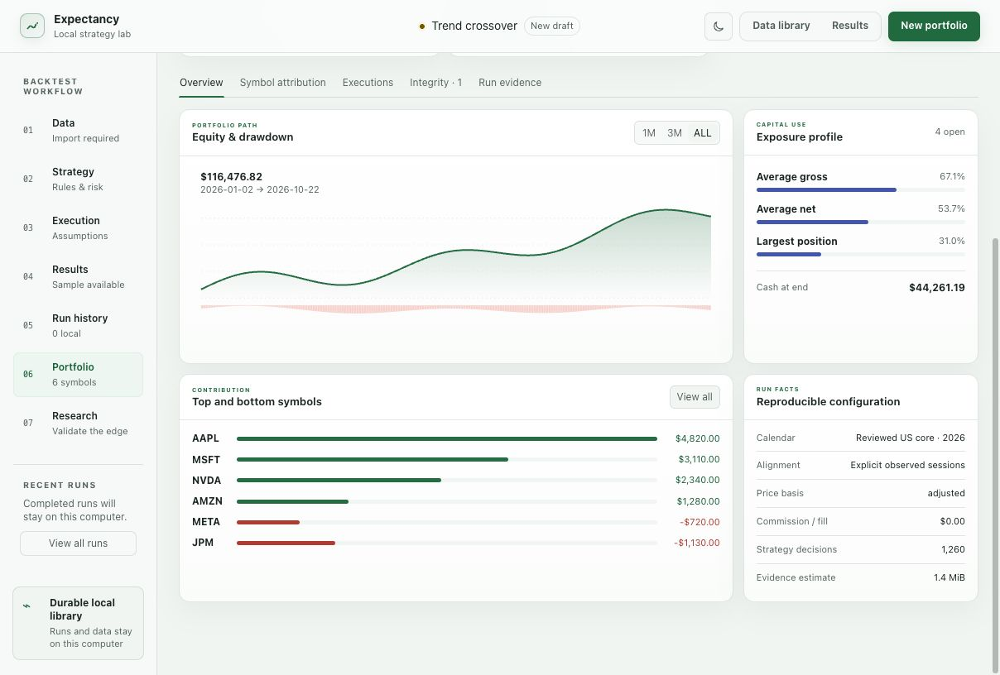

DATA
Data and calendars
STRATEGY
Strategy specification
Strategy V3 is the single-symbol typed document. Portfolio Strategy V1 compiles the same rule semantics into multi-symbol instructions while retaining exact definition identity.
Indicator catalogue
Comparisons include above, at-or-above, below, at-or-below, equality, inequality, and directional crossings. Formula trees support add, subtract, multiply and divide with at most four nested formula levels and 31 total indicator nodes.
Reviewed starter definitions
Trend crossover, EMA momentum, RSI recovery, volume-confirmed trend, Bollinger recovery, MACD zero-line, stochastic recovery, range breakout and a volatility-normalized formula are included as editable starting points. A starter is an example specification, not evidence of profitability.
ENGINE
Simulation and execution
Orders
- Market
- Limit
- Stop
- Stop-limit
- Day, good-til-cancelled and good-til-date
Positions and capital
- Long and short
- Four position-sizing modes
- Shared portfolio cash
- Gross-leverage limits
- Maintenance-margin policies
Market frictions
- Commission
- Spread and slippage
- Market impact
- Volume participation and partial fills
- Short-borrow cost
Corporate actions
- Raw splits
- Dividends
- Symbol changes
- Delistings
- Explicit price basis
Daily OHLCV cannot establish a unique intraday event path or historical queue position. An execution model is a controlled approximation, not recovered market microstructure.
RESULT
Result evidence

The overview connects path, exposure and attribution to bounded canonical tables. Values shown here are synthetic.
Open full-size screenshot ↗RESEARCH
Validation and comparison
PLATFORM
Desktop distribution targets
The first release targets native Apple Silicon macOS only. Check Downloads for actual installer availability and the tested macOS baseline. The remaining platforms are planned, without release dates.
Tauri 2 provides the desktop shell. Shared engine contracts do not establish platform compatibility: each package requires independent verification on its target system.
PRIVACY
Local authority and privacy
- Network authorityResearch actions operate without an account, telemetry or data upload.
- Source filesImport reads the selected file and publishes a distinct immutable normalized dataset.
- PythonUser code executes locally with the local user’s privileges inside bounded process controls; this is containment, not a security sandbox.
- DiagnosticsDiagnostic exports are opt-in and require an explicit preview before files leave the computer.
- Website measurementThe published documentation uses Cloudflare Web Analytics for aggregate page-view and performance measurement. It is disabled on localhost and when a browser signals an analytics opt-out, and it receives no application, strategy, dataset or result data.
- Documentation searchThe search index runs entirely in your browser. Search terms are not sent to a service or stored in the URL or browser storage.
- CredentialsAPI keys, proprietary market data and unrelated local files are not required by the backtesting workflow.
LIMITS
Scientific limits
- No bundled market data, brokerage connectivity or live execution.
- No claim that a completed backtest is unbiased, causal or predictive.
- Bar data cannot reconstruct a unique intrabar path, queue position or unobserved liquidity.
- Data quality, licensing, adjustment policy and point-in-time membership remain the user’s responsibility.
- User-authored Python must be treated as trusted local code, not as sandboxed content.
- Validation strength depends on the declared sampling, selection and multiple-testing procedure.